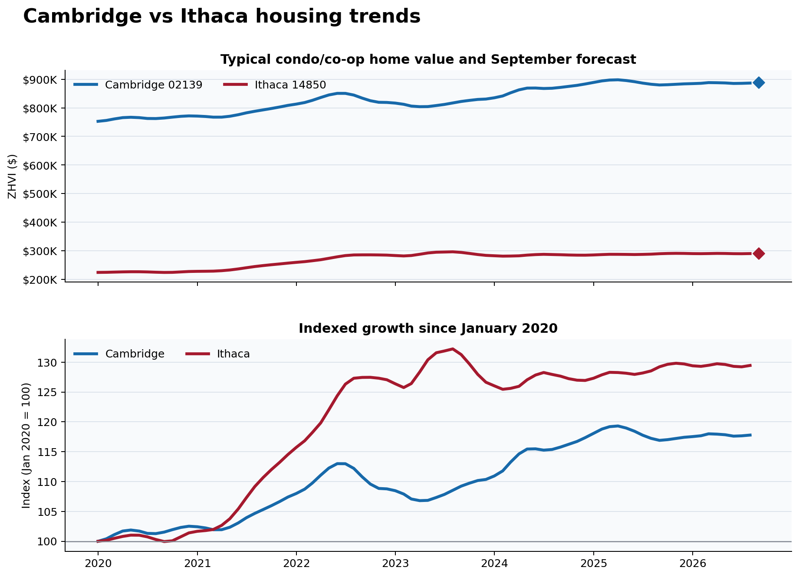

Week 2 · East region · Seed 2 vs Seed 15 · Research preview
Cambridge vs Ithaca
ChrionML compiled 80 monthly condo/co-op Zillow Home Value Index (ZHVI) observations for each ZIP code, covering January 2020 through August 2026. Both markets then follow the same five-model, expanding-window evaluation; the lowest one-month-ahead mean absolute error across 44 rolling backtests determines the selected model.
CAM
Cambridge, MA
East seed 2 · ZIP 02139
$888,570September 2026 forecast
+0.19% vs August
VSsame protocol
ITH
Ithaca, NY
East seed 15 · ZIP 14850
$289,770September 2026 forecast
+0.00% vs August
Cambridge leads on forecast value and projected monthly growth. This does not establish superior forecast accuracy.
Forecasting box score
| Measure | Cambridge | Ithaca |
|---|---|---|
| Months analyzed | 80 (Jan 2020–Aug 2026) | 80 (Jan 2020–Aug 2026) |
| Latest typical home value | $886,874 · Aug 2026 | $289,770 · Aug 2026 |
| Historical average home value | $830,935 | $269,196 |
| Historical high home value | $898,368 · Apr 2025 | $295,971 · Aug 2023 |
| Historical low home value | $752,915 · Jan 2020 | $223,734 · Sep 2020 |
| Year-over-year change | +0.47% | +0.71% |
| Selected model | Drift | Last value baseline |
| Next-month forecast | $888,570 · +0.19% | $289,770 · +0.00% |
| 80% prediction range | $882,916–$892,368 | $288,288–$291,481 |
| Rolling forecast error | MAE $3,030 · baseline $3,250 | MAE $1,219 · baseline $1,219 |
Housing trends and September forecasts

Data QA
Rows per city80 / 80
Missing values0
Duplicate dates0
Missing months0
QA statusPASS / PASS
Research methodology. Zillow publishes ZHVI market histories by geography and housing type. ChrionML located the condo/co-op view on each ZIP-code market page, compiled the displayed monthly observations into a structured research dataset, checked the dates and values, and applied a consistent forecasting protocol. Candidate models are last value, 12-month seasonal naive, drift, 36-month linear trend, and Holt damped trend. Each model is evaluated over 44 expanding-window, one-month-ahead forecasts; the lowest MAE wins. The 80% empirical prediction range uses the selected model’s rolling residuals.
Source and interpretation. The underlying historical series is Zillow Home Value Index (ZHVI) data for condo/co-op properties in Cambridge 02139 and Ithaca 14850. Zillow’s headline value at the top of a market page represents the default all-homes view and is not the series analyzed here; the condo/co-op series appears in the housing-market chart after selecting that property type. Forecasts, model comparisons, findings, and visualizations are ChrionML research outputs. Zillow did not produce, review, or endorse these forecasts. This research is not an appraisal or investment recommendation.
Source and interpretation. The underlying historical series is Zillow Home Value Index (ZHVI) data for condo/co-op properties in Cambridge 02139 and Ithaca 14850. Zillow’s headline value at the top of a market page represents the default all-homes view and is not the series analyzed here; the condo/co-op series appears in the housing-market chart after selecting that property type. Forecasts, model comparisons, findings, and visualizations are ChrionML research outputs. Zillow did not produce, review, or endorse these forecasts. This research is not an appraisal or investment recommendation.